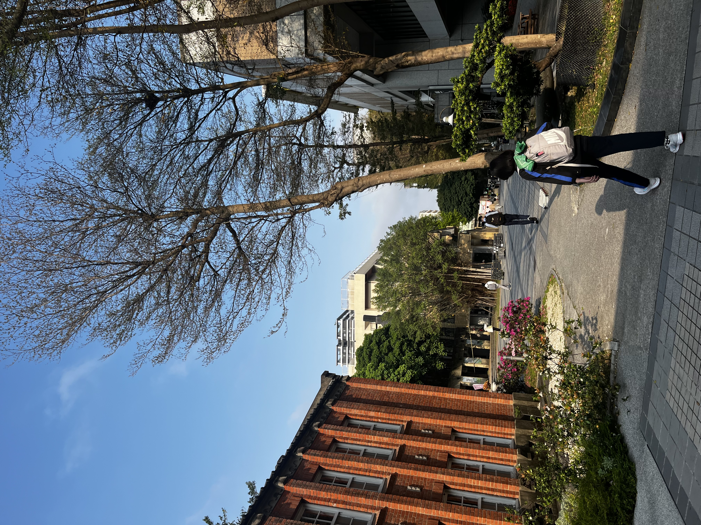

Universität
National Taipei University of Technology (NTUT)
Mein Auslandsjahr verbrachte ich an der NTUT, einer Partneruniversität der Hochschule Trier im Herzen von Taipeh.

Taipeh
Taiwan
2 Semester
an der NTUT
1 Credit ≈ 2 ECTS
Umrechnung
Meine Erfahrung
Was habe ich studiert?
Ich belegte hauptsächlich Marketing- und Designkurse, darunter UX Design, Integrated Advertising sowie Cultural Studies und AI.
Was war anders?
Im Vergleich zu Deutschland gab es häufiger Anwesenheitspflicht, mehr Präsentationen sowie Midterm- und Final Exams.
Was hat mir gefallen?
Besonders gefallen haben mir die kreativen und praxisorientierten Kurse sowie die freundliche Atmosphäre an der Universität.
Was habe ich gelernt?
Durch die flexible Kurswahl konnte ich meine Kenntnisse in Marketing und Design erweitern und neue Perspektiven kennenlernen.